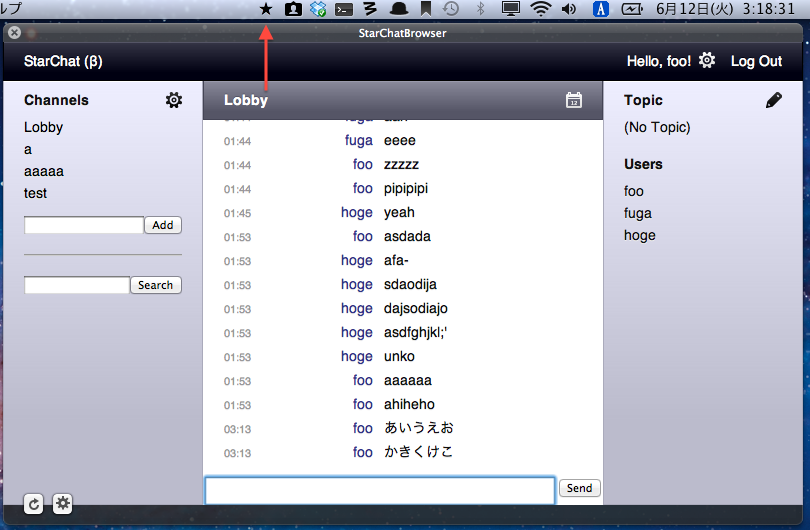

StarChatBrowser
StarChat を見るのが楽になるかもしれない MacOSX 向けアプリケーション
Project maintained by slightair
Hosted on GitHub Pages — Theme by mattgraham
StarChatBrowser
StarChatBrowser とは StarChat (https://github.com/hajimehoshi/star-chat) を見るのが楽になるかもしれないMacOSX 向けアプリケーションです。
機能
- ステータスバー（画面右上にアイコンがならんでいるやつ）から StarChat を呼び出すことができます。
- ウインドウの WebView に StarChat を表示します。
- 自分が参加しているチャンネルの更新を見て Growl で通知します。
スクリーンショット

バージョン情報
- 0.1.4 / 2012.06.21
- ユーザストリーム API の10分強制再接続をやめて、90秒パケットがやってこなかったら再接続するようにした
- ユーザストリーム API の接続状況がわかるようなランプをつけた
- 設定画面でアプリケーションのバージョンを表示するようにした
- チャンネルの削除などのダイアログがでない不具合を修正した
- コピー・ペーストなどの一部のショートカットが効かない不具合を修正した
- 0.1.3 / 2012.06.14
- StarChatのユーザストリームAPIの仕様変更に対応した
- Growl通知をクリックしても一部のチャンネルが正しく開かれない不具合を修正した
- チャンネルに入室したときに、そのチャンネルの過去ログがすべてGrowlで通知されてしまう不具合を修正した
- 0.1.2 / 2012.06.12
- ユーザストリームAPIへの接続を保ち続けるために、10分おきに接続を作り直すようにした
- Growl の通知をクリックするとその通知のチャンネルを開くようにした
- 自分の発言は Growl で通知しないようにした
- 0.1.1 / 2012.06.08
- ユーザストリームAPIに複数接続してしまう不具合を修正した
- WebView での進む、戻るを使えないようにした
- 0.1.0 / 2012.06.06
ダウンロード
https://github.com/slightair/StarChatBrowser/downloads
開発者向け情報
StarChatBrowser は CocoaPods を使っています。
ビルドする前に以下のコマンドを叩きましょう。
もし、CocoaPods をインストールしていない場合は、インストールしてください。
> pod install StarChatBrowser.xcodeproj
> open StarChatBrowser.xcworkspace
プロジェクトを開くのは xcworkspace の方です。